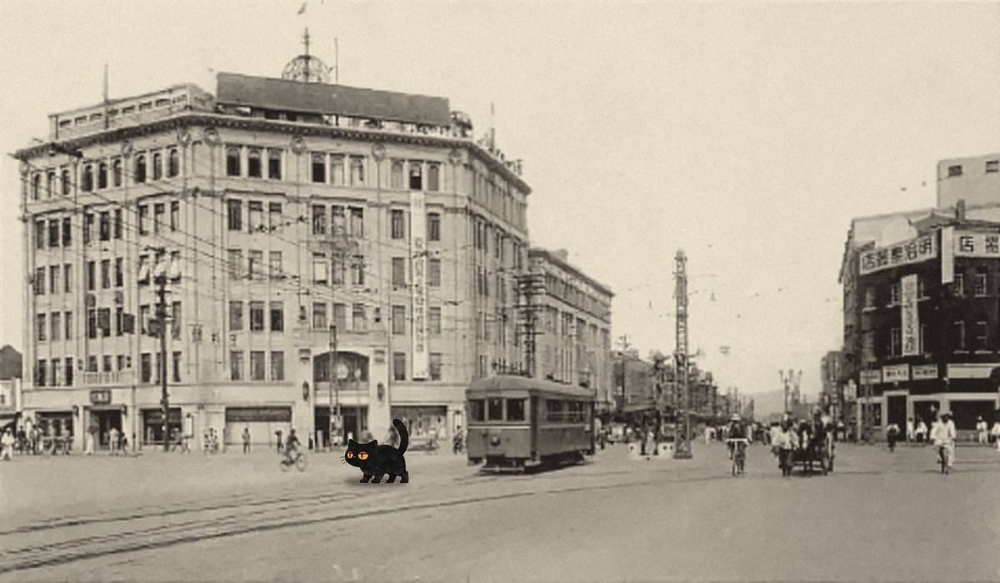
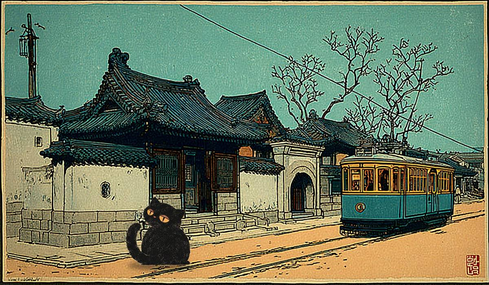

京城野錄 號外
양이를 찾습니다
까만 고양이 한 마리. 식자실에서 활자
「ㄱ」
을 물고 감. 그래서 이 호외의 ㄱ 자리는 전부 빈칸이오. · 현상금 멸치 한 줌 · 경성야록 편집국
尋
猫
1 / 8
종로 전차
· 경성 첫 전차 1899 · 사진은 1930년대


심묘 눈을 누르시오
사람들의 눈 · 실제 사진
귀
코
쇠 바퀴가 우는 소리가 나오.
귀가 쫑긋하오.
사람들의 눈으로 ↩
흑백: 종로를 달리는 전차, 당시 사진엽서 · 심묘는 합성
컬러: 심묘의 눈 · 재현 그림
이 골목을 떠나면 「심묘 연재만화」 한 칸이 찍히고, 편집국 지도에 붉은 실이 한 마디 이어지오.
다음 골목 · 음반가게 →